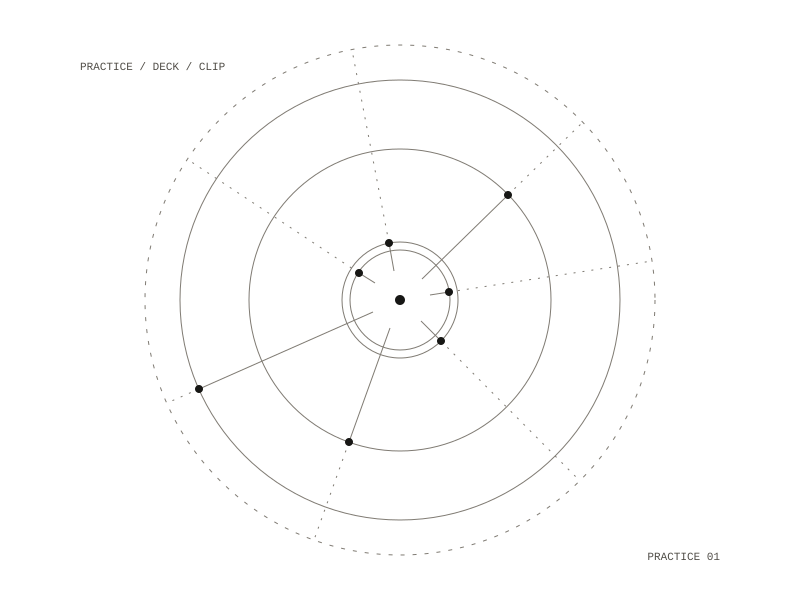

53 / project
Sacred Salesman
A practice environment for describing, demonstrating and presenting Eon's research
Sacred Salesman is a practice environment for developing the skill of describing, demonstrating and presenting EonMind and the systems research around it.

How it works
It holds no code: a file of instructions and a folder of content. Its outputs were to be slide decks and short video clips, made with outside generation tools. It searches the research vault and writes notes into it through a general vault tool server. That server replaced a dedicated companion that was designed to check the environment, report container state and run tests, and was never built.
Open questions
Open questions included which EonMind concepts to demonstrate first and which to hold back, and how often to hold sessions, weekly with hacker groups or monthly.
Out
planned: slide decks, short video clips
planned: slide decks, short video clips
Holds
instructions and a content folder
instructions and a content folder
Repository: private
All work